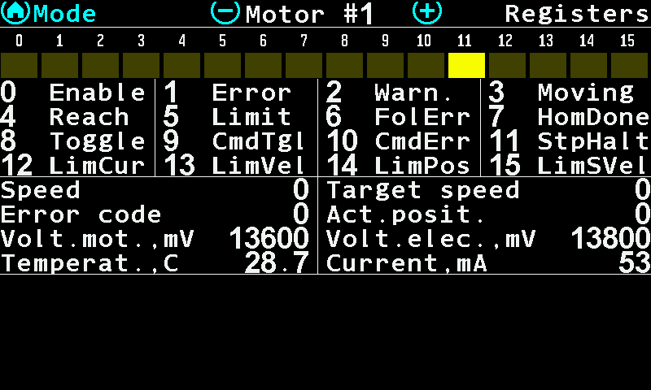

Diagnostic des contrôleurs de moteurs
Comment lire ce qu'un contrôleur de moteur de dosage signale de lui-même sur l'écran Electric motors — vitesse, code d'erreur, tensions, température, courant, bits d'état et compteurs de défauts — et comment s'y déplacer au toucher.
L'écran Electric motors montre en direct ce qu'un contrôleur de moteur signale de lui-même. Ouvrez-le par un toucher à deux doigts sur l'écran d'accueil → « Service » → « Electric motors » (moteurs électriques), ou par « Electric motors » dans le menu contextuel d'un moteur — dans les deux cas au niveau « Agronomist ». La vue de travail des moteurs est un autre écran : Écran Motors.

- « Mode » (mode) — touchez-le pour changer de page : « Registers » (registres), puis « Statistics » (statistiques).
- « Motor # » suivi d'un numéro — quel moteur est affiché, ici le moteur 1. Glissez vers la droite pour le numéro suivant, vers la gauche pour le précédent.
- « Registers » — le nom de la page. Un contrôleur universel a deux pages de registres, « Registers-1 » et « Registers-2 ».
- Le mot d'état — seize bits du contrôleur ; une cellule allumée (jaune) est un bit positionné.
- La légende des bits — le numéro et le nom de chaque bit. Tableau ci-dessous.
- « Speed » / « Target speed » (vitesse / vitesse de consigne) — ce que fait l'arbre par rapport à ce que le panneau a demandé. Un écart qui ne se referme pas est le premier signe d'une charge que le moteur ne peut pas porter.
- « Error code » / « Act.posit. » (code d'erreur / position actuelle) — le numéro d'erreur propre au contrôleur (codes), et la position à laquelle il se compte.
- « Volt.mot.,mV » / « Volt.elec.,mV » — la tension au moteur et à l'électronique, en millivolts. Une tension du moteur très inférieure à celle de l'électronique signifie que l'alimentation fléchit en charge.
- « Temperat.,C » / « Current,mA » — la température du contrôleur et le courant qu'il tire. Comparez le courant avec « I_hilo,A » réglé pour ce moteur (Configurer les contrôleurs de moteurs).
| Geste | Ce qu'il fait |
|---|---|
| Toucher « Mode » | Page suivante. |
| Glisser vers la droite / vers la gauche | Numéro de contrôleur suivant / précédent. Les numéros vont de 1 à 127 et bouclent ; un numéro sans contrôleur n'affiche rien d'utile. |
| Toucher à deux doigts | Le menu : « Change address », « Configuration » — voir Configurer les contrôleurs de moteurs. |
| Toucher à trois doigts, ou long glissement vers le haut | Ferme l'écran. |
Les bits d'état
| Bit | Nom | Bit | Nom |
|---|---|---|---|
| 0 | Enable | 8 | Toggle |
| 1 | Error | 9 | CmdTgl |
| 2 | Warn. | 10 | CmdErr |
| 3 | Moving | 11 | StpHalt |
| 4 | Reach | 12 | LimCur |
| 5 | Limit | 13 | LimVel |
| 6 | FolErr | 14 | LimPos |
| 7 | HomDone | 15 | LimSVel |
La légende est dessinée en anglais sur tous les panneaux, quelle que soit leur langue : c'est une table de bits du contrôleur, pas un message à l'opérateur.
Les compteurs de défauts

La page « Statistics » montre les défauts que ce moteur a accumulés sur la parcelle active — ils font partie des statistiques de la parcelle, pas du moteur :
| Compteur | Ce qu'il compte |
|---|---|
| « Jammed » | Le rouleau s'est bloqué et le contrôleur a dû abandonner ou reculer (bloqué). |
| « Disconnects » | Le contrôleur a cessé de répondre (déconnexions). |
| « Other » | Tout le reste que le contrôleur a signalé (autres). |
| « In failure » | La distance en mètres que ce moteur a passée en état de défaut (en défaut). |
Chaque compteur est blanc à zéro et rouge dès qu'il ne l'est plus. Un chiffre rouge ne signifie pas que le moteur est défaillant maintenant — il signifie qu'il l'a été, quelque part sur cette parcelle, et que la semence déposée là mérite un coup d'œil. Pour lire une autre parcelle, rendez-la d'abord active (Écran Statistics).
Votre machine fait quelque chose que cette page n'explique pas ? Écrivez à support@agriwelt.com — un ingénieur vous répond.